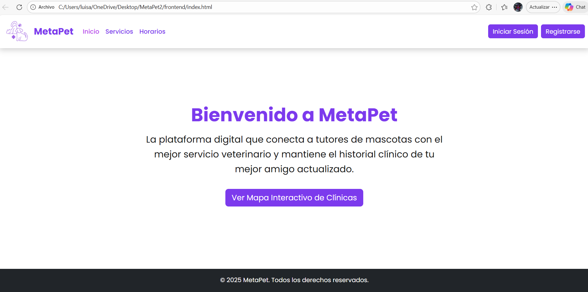

Elección de Tecnologías
Node.js + Express para backend y API REST
PostgreSQL para base de datos relacional
JWT para autenticación segura

HTML + CSS + Bootstrap para frontend responsivo
Sistema de control para veterinaria

MetaPet es una plataforma web que conecta tutores de mascotas con clínicas veterinarias y herramientas para gestionar historial clínico, consultas y datos de las mascotas. Resuelve la problemática de centralizar el historial clínico, facilitar la búsqueda de clínicas mediante un mapa interactivo y permitir a los tutores gestionar mascotas y consultas.
Node.js + Express para backend y API REST
PostgreSQL para base de datos relacional
JWT para autenticación segura
HTML + CSS + Bootstrap para frontend responsivo